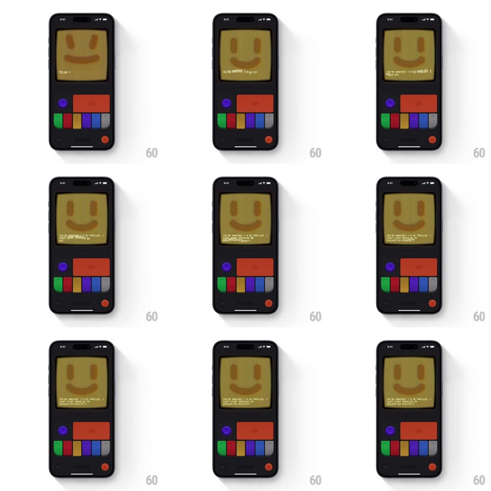

Media
Frame-by-frame

Rebuild this interaction 1:1: Mist's joy mode - tapping the toggle on the retro console flips the CRT screen to a warm yellow smiley face, a delighted message types out rapidly at the bottom, and a small waveform/level pulse animates beside the text as the face glows.

Rebuild this interaction 1:1: Mist's joy mode - tapping the toggle on the retro console flips the CRT screen to a warm yellow smiley face, a delighted message types out rapidly at the bottom, and a small waveform/level pulse animates beside the text as the face glows. ## Integration Integration: stack-agnostic spec - springs given as stiffness/damping, timed motions as duration + curve; map every value to your framework and animation library of choice. ## Scene Retro handheld console: dark chunky body, scanline CRT screen showing a large pixel smiley (yellow face, oval eyes, open smile), below it the physical control cluster - blue round button, red wide button, colored pill keys, red power dot. ## Motion spec Pattern: toggle flip with typewriter + waveform pulse. - Toggle tap: the switch snaps with a tactile click (lever rotate 30deg, spring ~500/25, 150ms + haptic) and the screen crossfades to the yellow joy face through one brief noise frame (100ms). - The message types out character by character (30ms per char, monospace, blinking block cursor) - delighted copy about being switched on. - A tiny level meter beside the text pulses (3-5 bars bouncing at staggered 150ms loops) while the typing runs, settling to flat when the line completes. - The smiley holds a soft glow (face luminance breathes +/-5%, 2s loop). ## Calibration - The single noise frame between states is the CRT channel-change - don't crossfade smoothly. - The waveform bars are chunky pixels, matching the screen's resolution. ## Reduced motion Face and text appear without noise frame or typing; meter static. ## Don't miss - The yellow is warm mustard, not neon - joy reads cozy, not electric. - The cursor keeps blinking after the line finishes (500ms square-wave) - the console stays "alive".